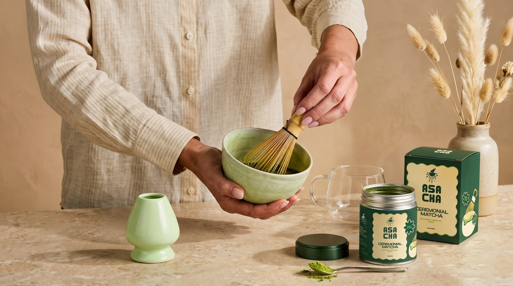
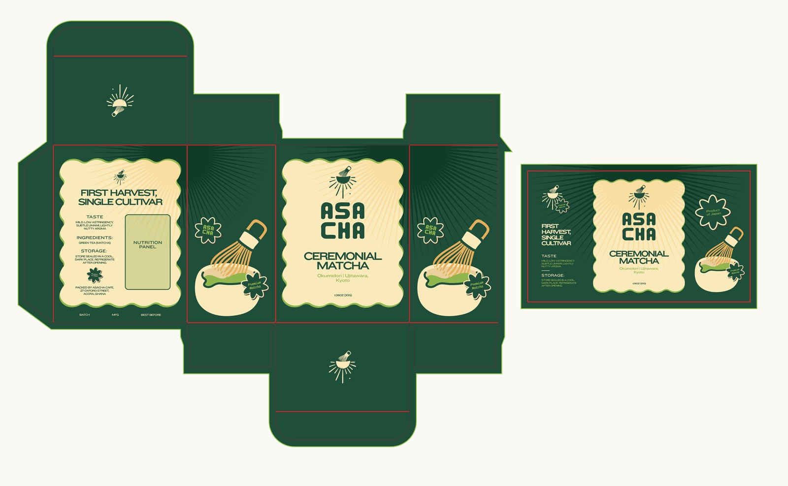
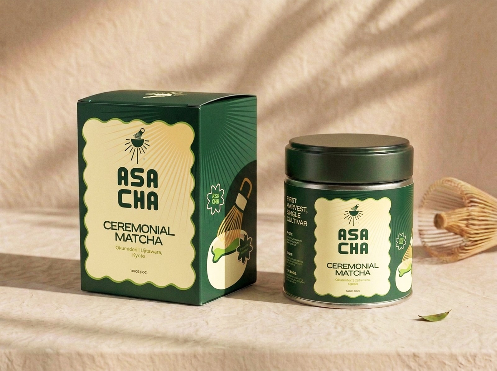
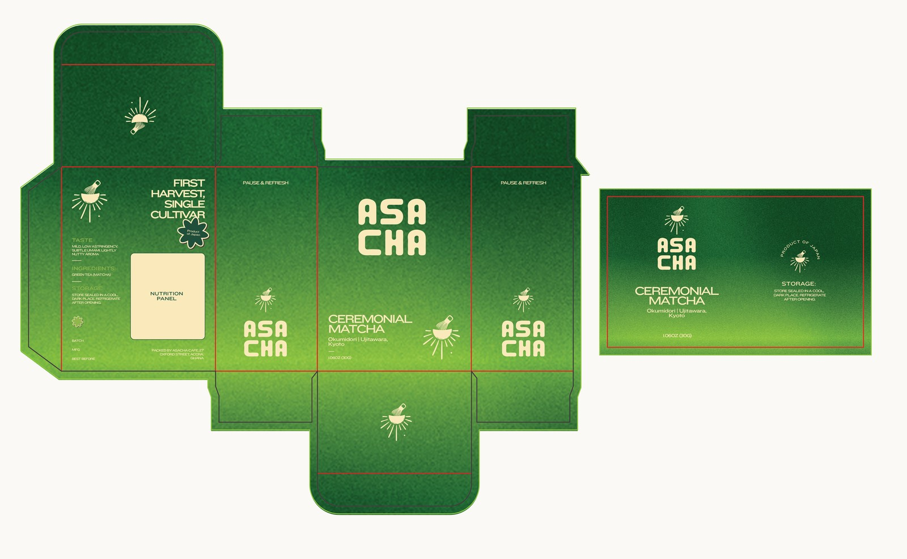
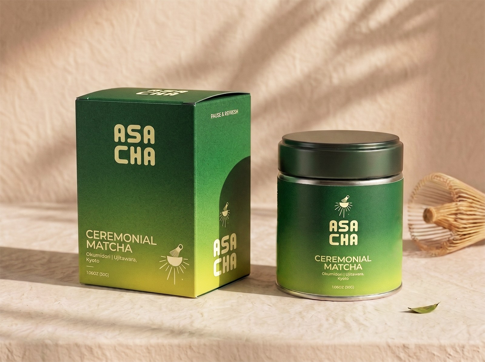
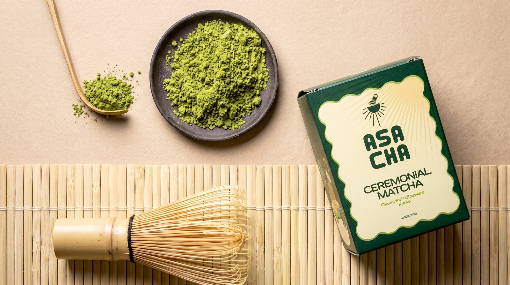
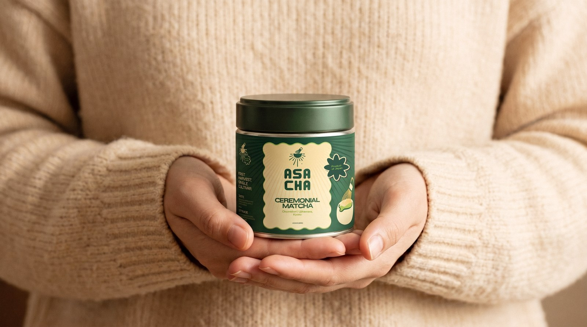
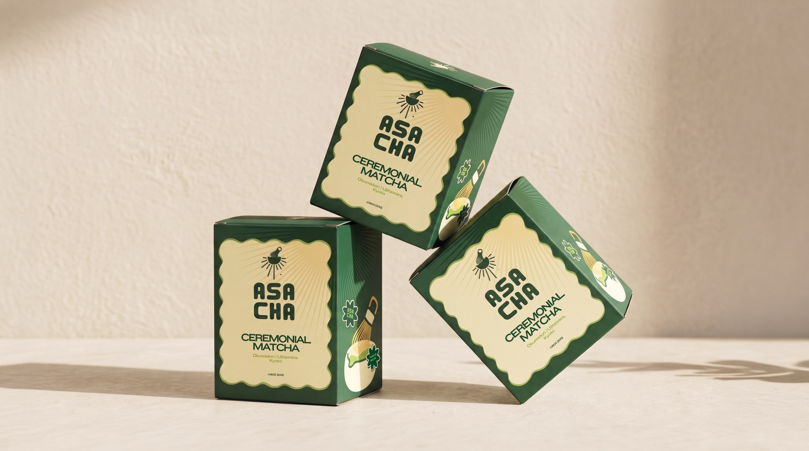

Asa Cha
Translating Uji ceremonial matcha craft into dual box-and-tin packaging concepts, 3D mockups, and tactile motion ads.

[ 01 · Ceremonial Ritual ]The Challenge
Asa Cha needed to validate two packaging directions and ship launch ads simultaneously. Their flagship first-harvest Okumidori matcha lives in both a folding paperboard outer carton and a matte dark-green aluminum tin—meaning every creative had to hold fine cultivar micro-copy, scalloped label frames, and custom chasen illustrations across curved and flat surfaces.
Before committing to print runs, the brand wanted photorealistic 3D mockups, tactile tea-table photography, and a complete launch film showing the tin being opened, scooped, whisked, and enjoyed.

[ Concept 01 · Dieline ]
[ Concept 01 · 3D Render ]01. Packaging System & Twin Setup
We engineered two complete packaging directions—Concept 01 pairing heritage cream scallop framing with deep forest green, and Concept 02 introducing a textured botanical gradient wrap—and trained dedicated Brand Twins for both the outer carton and inner brushed-rim tin.
Precision Across Curved & Flat Geometry
- Zero distortion around the cylindrical tin seam and embossed lid rim.
- Color-calibrated matte paperboard stock preserving deep matcha greens under bright sun.
- Side-by-side 3D mockup testing enabled instant team alignment before press proof.

[ Concept 02 · Dieline ]
[ Concept 02 · 3D Render ]02. Tactile Studio & Ritual Photography
Matcha buyers respond to texture—stonewashed linen, travertine stone, vibrant ceremonial green powder, and unhurried morning light. We produced a suite of overhead flatlays, tactile hand-held tin portraits, and architectural carton stacks.
Consistent Brand World
- Overhead studio composition pairing loose powder, bamboo chasen, and carton geometry.
- Warm knitwear handheld shot anchoring the 30g tin for Meta carousel cover slides.
- Sculptural stacked-carton still built for hero storefront headers and OOH banners.

[ 02 · Overhead Flatlay ]
[ 03 · Handheld Tin ]
[ 04 · Architectural Stack ]03. Ready for Launch Day
Asa Cha received print-ready dielines, validated 3D mockups for both concepts, and a full library of Meta/TikTok statics and motion before their first carton arrived from press.
Full carton + tin packaging systems
Stills, mockups & 10s launch film
From final artwork to campaign drop
Every cultivar & weight note exact
“Seeing both packaging directions rendered in real morning light—plus a full whisking commercial—let us launch our pre-order campaign weeks ahead of production.”